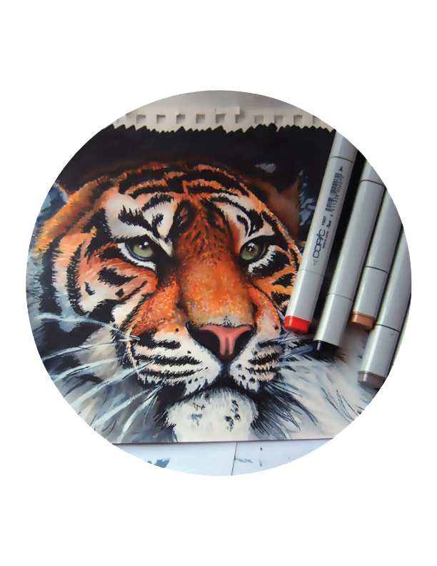
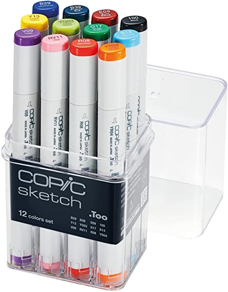
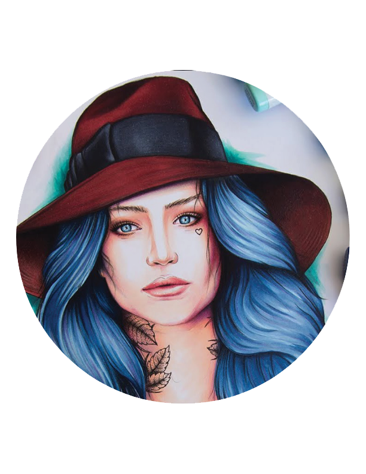

Art By:
Camilla Mikaela

Art By:
Stephen Ward
Art By:
Camilla Mikaela
Art By:
Stephen Ward
Copic (コピック, Kopikku) is a
Japanese brand of markers
made and created by Too
Corporations. The markers were
created in 1987 (35 years ago)
and have been dominating the
artistic alcohol marker market
ever since its debut.
The markers come in 358 different
colors and shades, making it, not
only the most popular marker, but
also the marker with the biggest
color range. Additionally, copics
also offer the ability of blendable
colors, unlocking even more colors
than the original 358
Copic Sketch
Copic Classic
Copic Ciao
Copic Wide
Tools Ochanomizu
Kanda Surugadai, Chiyoda City, Tokyo 101-0062
TEL: 03-3295-1438 FAX: 03-3295-1440
Yokohama Joinus
Minamisaiwai, Nishi Ward, Yokohama, Kanagawa 220-0005
TEL: 045-321-6728 FAX: 045-321-6739
Tools Osaka Umeda
Shibata, Kita Ward, Osaka, 530-0012
TEL: 06-6372-9272 FAX: 06-6372-1048